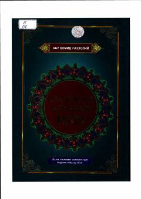

SEIbodat va ma'naviy kamolot yo'lini yorituvchi diniy-ma'rifiy asar.
Ushbu kitob buyuk mutafakkir Abu Homid G'azzoliyning so'nggi asari bo'lib, insonni ma'naviy kamolotga erishtirish va ibodat yo'lidagi to'siqlarni yengish sirlarini ochib beradi. Asarda musulmonlarni oxirat saodatiga eltuvchi to'g'ri yo'l va ibodat odoblari atroflicha bayon etilgan.